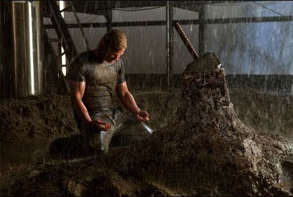
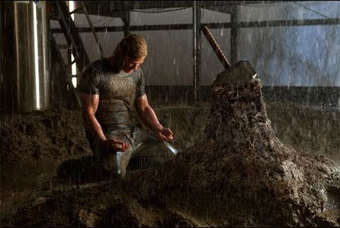
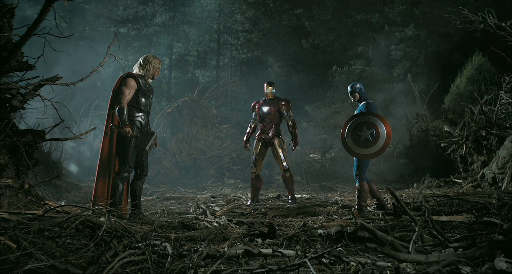

The convoy is ambushed and Stark is critically wounded by one of his own rocket propelled grenades.
He is captured and imprisoned in a cave by the terrorist group the Ten Rings, and an electromagnet is
grafted into his chest by fellow captive Yinsen to keep the shrapnel shell shards that wounded him from
reaching his heart and killing him. Ten Rings leader Raza offers Stark freedom in exchange for building
a Jericho missile for the group, but Tony and Yinsen agree Raza will not keep his word. Stark and Yinsen
secretly build a powerful electric generator called an arc reactor to power Stark's electromagnet and
a suit of powered armor to aid in their escape. Although they keep the suit hidden almost to completion,
the Ten Rings attack the workshop when they discover their intentions. Yinsen sacrifices himself to divert
them while the suit powers up. The armored Stark battles his way out of the cave to find the dying Yinsen,
then in anger burns the Ten Rings weapons and flies away, crashing in the desert and destroying the suit.
After being rescued by Rhodes, Stark returns home and announces that his company will no longer manufacture
weapons. Obadiah Stane, his father's old partner and the company's manager, advises Stark that this may
ruin Stark Industries and his father's legacy. In his home workshop, Stark builds an improved version
of his suit, as well as a more powerful arc reactor for his chest.
Personal assistant Pepper Potts places the original reactor inside a small glass showcase. Though Stane
requests details, Stark keeps his work to himself. At a charity event held by Stark Industries, reporter
Christine Everhart informs Stark that his company's weapons, including the Jericho, were recently delivered
to the Ten Rings and are being used to attack Yinsen's home village, Gulmira. Stark also learns Stane
is trying to replace him as head of the company. Enraged by these revelations, Stark dons his new armor
and flies to Afghanistan, where he saves Yinsen's village. While flying home, Stark is shot at by two
F-22 Raptor fighter jets. He reveals his secret identity to Rhodes over the phone in an attempt to end
the attack.
Meanwhile, the Ten Rings gather the pieces of Stark's prototype suit and meet with Stane, who subdues
Raza with a sonic device and has the rest of the group killed. Stane has a new suit reverse engineered
from the wreckage. Seeking to find any other weapons delivered to the Ten Rings, Stark sends Pepper to
hack into the company computer system from Stane's office. She discovers Stane has been supplying the
terrorists and hired the Ten Rings to kill Stark, but the group reneged. Potts meets with Agent Phil
Coulson of S.H.I.E.L.D., a counter-terrorism agency, to inform him of Stane's activities. Stane's scientists
cannot duplicate Stark's arc reactor so Stane ambushes Stark at home and takes his, though Stark manages
to get to his original reactor to replace the taken one. Potts and several S.H.I.E.L.D. agents attempt
to arrest Stane, but he dons his suit and attacks them. Stark fights Stane, but is outmatched without
his new reactor to run his suit at full capacity.
Stark lures Stane atop the Stark Industries building and instructs Potts to overload the large arc reactor
there. This unleashes a massive electrical surge that causes Stane and his armor to fall into the exploding
reactor, killing him. The next day, at a press conference, Stark admits to being the superhero the press
has dubbed "Iron Man". In a post-credits scene, S.H.I.E.L.D. Director Nick Fury visits Stark at home,
telling him that Iron Man is not "the only superhero in the world", and explaining that he wants to discuss
the "Avengers Initiative".

Five years later, Banner works at a bottling factory in Rocinha, Rio de Janeiro in Brazil, while searching
for a cure for his condition. On the Internet, he collaborates with a colleague he knows only as "Mr.
Blue", and to whom he is "Mr. Green". He is also learning meditative breathing techniques to help keep
control, and has not transformed in five months. After Banner cuts his finger, a drop of his blood falls
into a bottle, and is eventually ingested by an elderly consumer in Milwaukee, Wisconsin, giving him
gamma sickness.
Using the bottle to track down Banner, Ross sends a SWAT team, led by Russian-born British Royal Marine
Emil Blonsky, to capture him. Banner transforms into the Hulk and defeats Blonsky's team. After Ross
explains how Banner became the Hulk, Blonsky agrees to be injected with a small amount of a similar serum,
which gives him enhanced speed, strength, agility, and healing, but also begins to deform his skeleton
and impair his judgment. Banner returns to Culver University and reunites with Betty, who is dating psychiatrist
Leonard Samson. Banner is attacked by Ross and Blonsky's forces, tipped off by the suspicious Samson,
causing him to again transform into the Hulk. The ensuing battle outside the university proves to be
futile for Ross' forces and they eventually retreat, though Blonsky, whose sanity is starting to falter,
boldly attacks and mocks the Hulk. The Hulk seemingly kills Blonsky and flees with Betty.
After the Hulk reverts to Banner, he and Betty go on the run, and Banner contacts Mr. Blue, who urges
them to meet him in New York City. Mr. Blue is actually cellular biologist Dr. Samuel Sterns, who tells
Banner he has developed a possible antidote to Banner's condition. After a successful test, he warns
Banner that the antidote may only reverse each individual transformation. Sterns reveals he has synthesized
Banner's blood samples, which Banner sent from Brazil, into a large supply, with the intention of applying
its "limitless potential" to medicine. Fearful of the Hulk's power falling into the military's hands,
Banner wishes to destroy the blood supply. Meanwhile, Blonsky is revealed to have survived the battle
and has completely healed. He joins Ross' forces for a third attempt to take Banner into custody. They
succeed and Banner, along with Betty, are taken away in a helicopter. Blonsky stays behind and forces
Sterns to inject him with Banner's blood, as he covets the Hulk's power. Sterns warns that the combination
of the super-soldier formula and Banner's blood may cause him to become an "abomination", but Blonsky
insists. The experiment mutates Blonsky into a creature with size and strength surpassing that of the
Hulk, but drives him mad.
He attacks Sterns, who gets some of Banner's blood in a cut on his forehead, causing him to begin mutating
as well. Blonsky then rampages through Harlem. Realizing that the Hulk is the only one who can stop Blonsky,
Banner convinces Ross to release him. He jumps from Ross' helicopter and transforms after hitting the
ground. After a long and brutal battle through Harlem, the Hulk defeats Blonsky. After having a small,
peaceful moment with Betty, the Hulk flees from New York. A month later, Banner is in Bella Coola, British
Columbia. Instead of trying to suppress his transformation, he successfully transforms in a controlled
manner. In a final scene, Tony Stark approaches Ross at a local bar and informs him a team is being put
together.
Growing increasingly despondent and reckless due to his impending death, and choosing not to tell anyone
about his condition, Stark appoints his personal assistant Pepper Potts CEO of Stark Industries, and
hires Stark employee Natalie Rushman as his personal assistant. Stark competes in the Monaco Historic
Grand Prix, where he is attacked in the middle of the race by Vanko who wields electrified whips. Stark
dons his Mark V armor and defeats Vanko, but the suit is severely damaged. Vanko explains his intention
was to prove to the world that Iron Man is not invincible. Impressed by Vanko's performance, Stark's
rival, Justin Hammer, fakes Vanko's death while breaking him out of prison and asks him to build a line
of armored suits to upstage Stark.
During what he believes is his final birthday party, Stark gets drunk while wearing the Mark IV suit.
Disgusted, U.S. Air Force Lieutenant Colonel James Rhodes dons Stark's Mark II prototype armor and tries
to restrain him. The fight ends in a stalemate, so Rhodes confiscates the Mark II for the US Air Force.
Nick Fury, director of S.H.I.E.L.D., approaches Stark, revealing "Rushman" to be undercover agent Natasha
Romanoff and that Howard Stark was a S.H.I.E.L.D. founder whom Fury knew personally. Fury explains that
Vanko's father jointly invented the arc reactor with Stark, but when Anton tried to sell it for profit,
Stark had him deported. The Soviets sent Anton to the gulag.
Fury gives Stark some of his father's old material; a hidden message in the diorama of the 1974 Stark
Expo proves to be a diagram of the structure of a new element. With the aid of his computer J.A.R.V.I.S.,
Stark synthesizes it. When he learns Vanko is still alive, he places the new element in his arc reactor
and ends his palladium dependency. At the Expo, Hammer unveils Vanko's armored drones, led by Rhodes
in a heavily weaponized version of the Mark II armor. Stark arrives in the Mark VI armor to warn Rhodes,
but Vanko remotely takes control of both the drones and Rhodes' armor and attacks Iron Man.

Hammer is arrested while Romanoff and Stark's bodyguard Happy Hogan go after Vanko at Hammer's factory.
Vanko escapes, but Romanoff returns control of the Mark II armor to Rhodes. Stark and Rhodes together
defeat Vanko and his drones. Vanko seemingly commits suicide by blowing up his suit. At a debriefing,
while news footage of a rampaging Hulk plays, Fury informs Stark that because of his difficult personality,
S.H.I.E.L.D. intends to use him only as a consultant. Stark and Rhodes receive medals for their heroism.
In a post-credits scene, S.H.I.E.L.D. agent Phil Coulson reports the discovery of a large hammer at the
bottom of a crater in a desert in New Mexico.
For Thor's arrogance, Odin strips his son of his godly power and exiles him to Earth as a mortal, accompanied
by his hammer Mjolnir, now protected by an enchantment that allows only the worthy to wield it. Thor
lands in New Mexico, where astrophysicist Dr. Jane Foster, her assistant Darcy Lewis, and mentor Dr.
Erik Selvig, find him. The local populace finds Mjolnir, which S.H.I.E.L.D. agent Phil Coulson soon commandeers
before forcibly acquiring Jane's data about the wormhole that delivered Thor to Earth. Thor, having discovered
Mjolnir's nearby location, seeks to retrieve it from the facility that S.H.I.E.L.D. quickly constructed
but he finds himself unable to lift it, and is captured.
 

With Selvig's help, he is freed and resigns himself to exile on Earth as he develops a romance with
Jane. Loki discovers that he is actually Laufey's son, adopted by Odin after the war ended. A weary Odin
falls into the deep "Odinsleep" to recover his strength. Loki seizes the throne in Odin's stead and offers
Laufey the chance to kill Odin and retrieve the Casket. Sif and the Warriors Three, unhappy with Loki's
rule, attempt to return Thor from exile, convincing Heimdall, gatekeeper of the Bifröst—the means of
traveling between worlds—to allow them passage to Earth.
Aware of their plan, Loki sends the Destroyer, a seemingly indestructible automaton, to pursue them
and kill Thor. The warriors find Thor, but the Destroyer attacks and defeats them, prompting Thor to
offer himself instead. Struck by the Destroyer and near death, Thor's sacrifice proves him worthy to
wield Mjolnir. The hammer returns to him, restoring his powers and enabling him to defeat the Destroyer.
Kissing Jane goodbye and vowing to return, he and his fellow Asgardians leave to confront Loki.
In Asgard, Loki betrays and kills Laufey, revealing his true plan to use Laufey's attempt on Odin's
life as an excuse to destroy Jotunheim with the Bifröst Bridge, thus proving himself worthy to his adoptive
father. Thor arrives and fights Loki before destroying the Bifröst Bridge to stop Loki's plan, stranding
himself in Asgard. Odin awakens and prevents the brothers from falling into the abyss created in the
wake of the bridge's destruction, but Loki allows himself to fall when Odin rejects his pleas for approval.
Thor makes amends with Odin, admitting he is not ready to be king; while on Earth, Jane and her team
search for a way to open a portal to Asgard. In a post-credits scene, Selvig has been taken to a S.H.I.E.L.D.
facility, where Nick Fury opens a briefcase and asks him to study a mysterious cube-shaped object, which
Fury says may hold untold power. An invisible Loki prompts Selvig to agree, and he does.

In March 1942, Nazi officer Johann Schmidt and his men enter the town of Tønsberg in German-occupied
Norway, to steal a mysterious relic called the Tesseract, which possesses untold powers. Meanwhile, in
New York City, Steve Rogers is rejected for World War II military recruitment because of various health
and physical problems. While attending an exhibition of future technologies with his friend Sgt. James
"Bucky" Barnes, Rogers again attempts to enlist. Overhearing Rogers' conversation with Barnes about wanting
to help in the war, Dr. Abraham Erskine allows Rogers to enlist. He is recruited into the Strategic Scientific
Reserve as part of a "super-soldier" experiment under Erskine, Col. Chester Phillips, and British agent
Peggy Carter.
Phillips is unconvinced by Erskine's claims that Rogers is the right person for the procedure but relents
after seeing Rogers commit an act of self-sacrificing bravery. The night before the treatment, Erskine
reveals to Rogers that Schmidt underwent an imperfect version of the procedure and suffered permanent
side-effects. Back in Europe, Schmidt and Dr. Arnim Zola harness the energies of the Tesseract, intending
to use the power to fuel Zola's inventions, mounting an offensive that will change the world. Schmidt
discovers Erskine's location and dispatches an assassin to kill him. In the U.S., Erskine subjects Rogers
to the super-soldier treatment, injecting him with a special serum and dosing him with "vita-rays". After
Rogers emerges from the experiment taller and more muscular, one of the attendees kills Erskine, revealing
himself to be Schmidt's assassin, Heinz Kruger.
Rogers pursues and captures Kruger, but the assassin avoids interrogation by committing suicide by cyanide
capsule. With Erskine dead and his super-soldier formula lost, U.S. Senator Brandt has Rogers tour the
nation in a colorful costume as "Captain America" to promote war bonds, rather than allow scientists
to study him and attempt to rediscover the formula. In 1943, while on tour in Italy performing for active
servicemen, Rogers learns that Barnes's unit was MIA in a battle against Schmidt's forces. Refusing to
believe that Barnes is dead, Rogers has Carter and engineer Howard Stark fly him behind enemy lines to
mount a solo rescue attempt. Rogers infiltrates the fortress of Schmidt's Hydra organization, freeing
Barnes and the other prisoners. Rogers confronts Schmidt, who removes his mask, revealing a red, skull-like
visage that earned him the sobriquet "the Red Skull".
Schmidt escapes and Rogers returns to base with the freed soldiers. Rogers recruits Barnes, Dum Dum Dugan,
Gabe Jones, Jim Morita, James Montgomery Falsworth, and Jacques Dernier to attack other known Hydra bases.
Stark outfits Rogers with advanced equipment, most notably a circular shield made of vibranium, a rare,
nearly indestructible metal. Rogers and his team sabotage various Hydra operations. The team later assaults
a train carrying Zola. Rogers and Jones succeed in capturing Zola, but Barnes falls from the train to
his assumed death. Using information extracted from Zola, the final Hydra stronghold is located, and
Rogers leads an attack to stop Schmidt from using weapons of mass destruction on American cities and
soon other major cities across the globe. Rogers climbs aboard Schmidt's aircraft as it takes off. During
the subsequent fight, the Tesseract's container is damaged. Schmidt physically handles the Tesseract,
causing him to dissolve in a bright light. The Tesseract falls to the floor, burning through the plane
and falling to Earth.

Seeing no way to land the plane without the risk of detonating its weapons, Rogers crashes it in the
Arctic. Stark later recovers the Tesseract from the ocean floor but is unable to locate Rogers or the
aircraft, presuming him dead. Rogers awakens in a 1940s-style hospital room. Deducing from an anachronistic
radio broadcast that something is wrong, he flees outside and finds himself in present-day Times Square,
where S.H.I.E.L.D. director Nick Fury informs him he has been "asleep" for nearly 70 years. In a post-credits
scene, Fury approaches Rogers, proposing a mission with worldwide ramifications.
Agent Phil Coulson explains that the object has begun radiating an unusual form of energy. The Tesseract
suddenly activates and opens a wormhole, allowing Loki to reach Earth. Loki takes the Tesseract and uses
his scepter to enslave Selvig and a couple of agents, including Clint Barton, to aid him in his getaway.
In response to the attack, Fury reactivates the "Avengers Initiative".
Agent Natasha Romanoff is sent to Calcutta to recruit Dr. Bruce Banner to trace the Tesseract through
its gamma radiation emissions. Coulson visits Tony Stark to have him review Selvig's research, and Fury
approaches Steve Rogers with an assignment to retrieve the Tesseract. In Stuttgart, Barton steals iridium
needed to stabilize the Tesseract's power while Loki causes a distraction, leading to a confrontation
with Rogers, Stark, and Romanoff that ends with Loki's surrender. While Loki is being escorted to S.H.I.E.L.D.,
Thor, his adoptive brother, arrives and frees him, hoping to convince him to abandon his plan and return
to Asgard. After a confrontation with Stark and Rogers, Thor agrees to take Loki to S.H.I.E.L.D.'s flying
aircraft carrier, the Helicarrier.

There Loki is imprisoned while Banner and Stark attempt to locate the Tesseract. The Avengers become
divided, both over how to approach Loki and the revelation that S.H.I.E.L.D. plans to harness the Tesseract
to develop weapons as a deterrent against hostile extraterrestrials. As the group argues, Barton and
Loki's other possessed agents attack the Helicarrier, disabling its engines in flight and causing Banner
to transform into the Hulk. Stark and Rogers try to restart the damaged engine, and Thor attempts to
stop the Hulk's rampage. Romanoff fights Barton, and knocks him unconscious, breaking Loki's mind control.
Loki escapes after killing Coulson and ejecting Thor from the airship, while the Hulk falls to the ground
after attacking a S.H.I.E.L.D. fighter jet. Fury uses Coulson's death to motivate the Avengers into working
as a team. Stark and Rogers realize that for Loki, simply defeating them will not be enough; he needs
to overpower them publicly to validate himself as ruler of Earth. Loki uses the Tesseract, in conjunction
with a device Selvig built, to open a wormhole above Stark Tower to the Chitauri fleet in space, launching
his invasion.

The Avengers rally in defense of New York City, the wormhole's location, but quickly realize they will
be overwhelmed as wave after wave of Chitauri descend upon Earth. Banner arrives and transforms into
the Hulk, and together he, Rogers, Stark, Thor, Barton, and Romanoff battle the Chitauri while evacuating
civilians. The Hulk finds Loki and beats him into submission. Romanoff makes her way to the wormhole
generator, where Selvig, freed of Loki's control, reveals that Loki's scepter can be used to shut down
the generator.
Meanwhile, Fury's superiors attempt to end the invasion by launching a nuclear missile at Midtown Manhattan.
Stark intercepts the missile and takes it through the wormhole toward the Chitauri fleet. The missile
detonates, destroying the Chitauri mothership and disabling their forces on Earth. Stark's suit runs
out of power, and he falls back through the wormhole just as Romanoff closes it.
Stark goes into freefall, but the Hulk saves him from crashing to the ground. In the aftermath, Thor
returns Loki and the Tesseract to Asgard, while Fury expresses confidence that the Avengers will return
if and when they are needed. In a mid-credits scene, the Other confers with his master about the failed
attack on Earth. In a post-credits scene, the Avengers eat in silence at a shawarma restaurant.